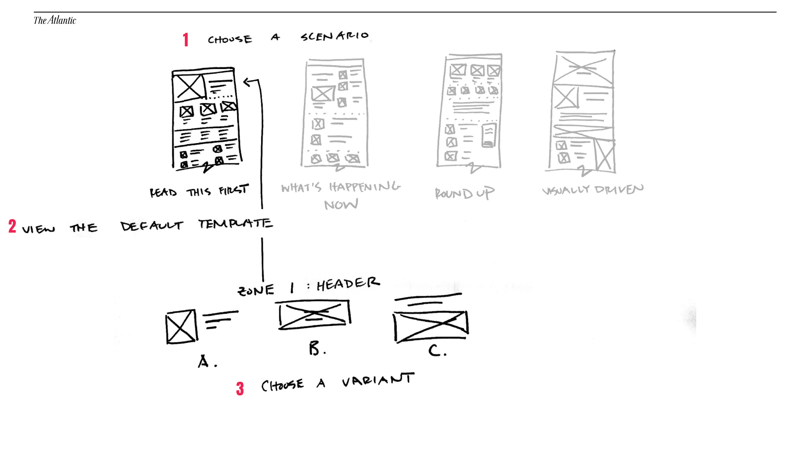
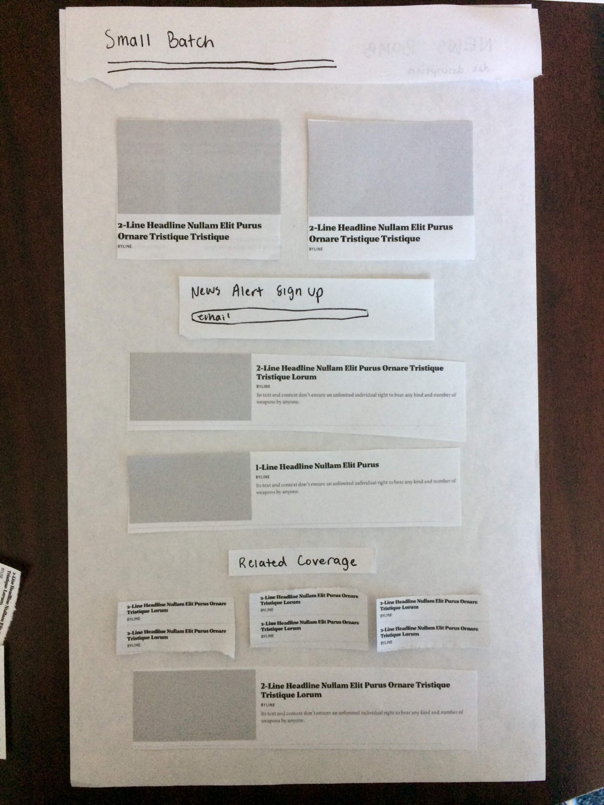
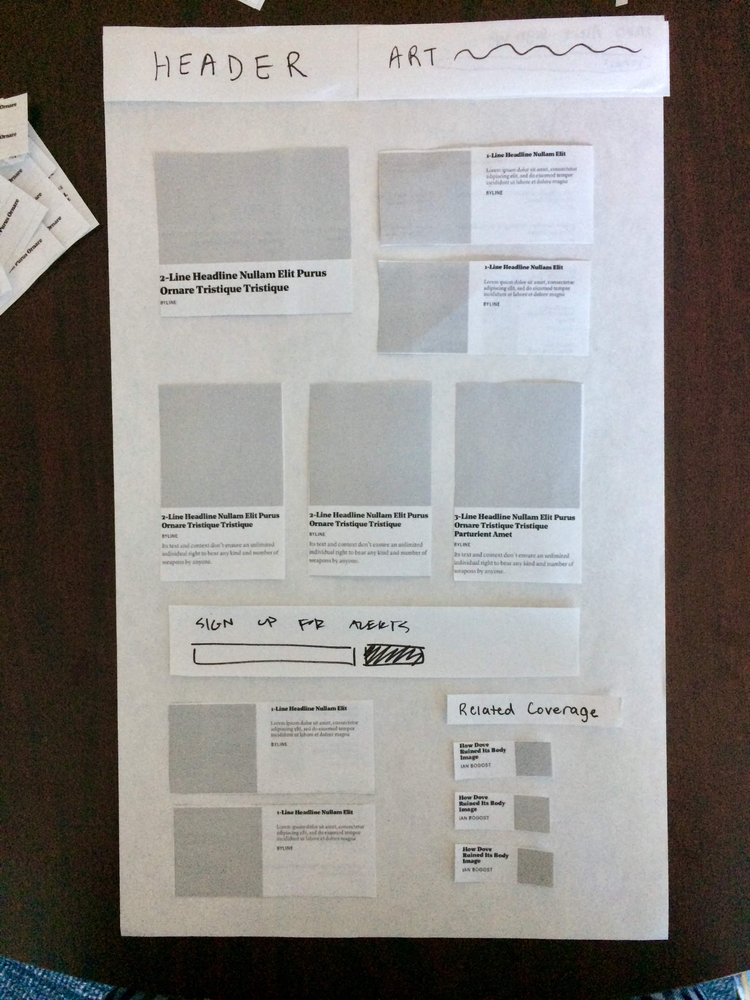
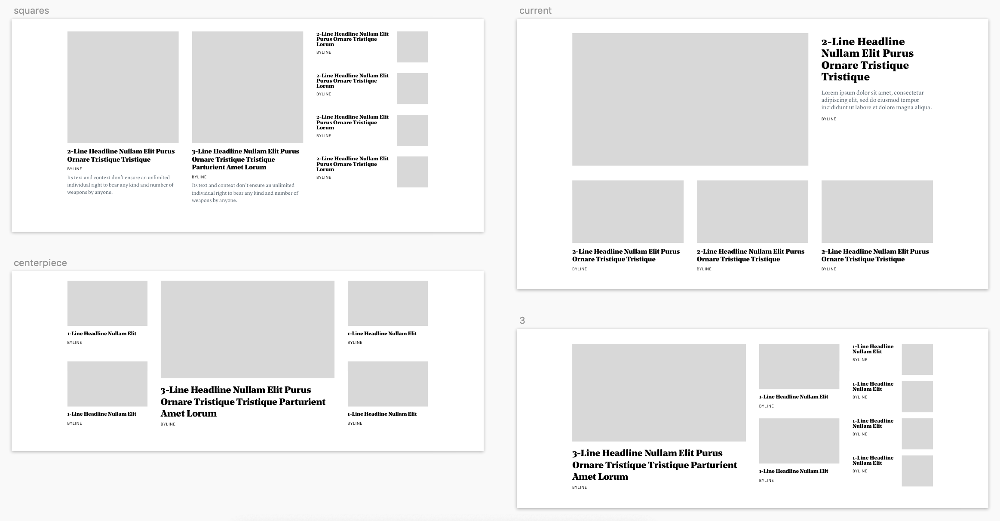
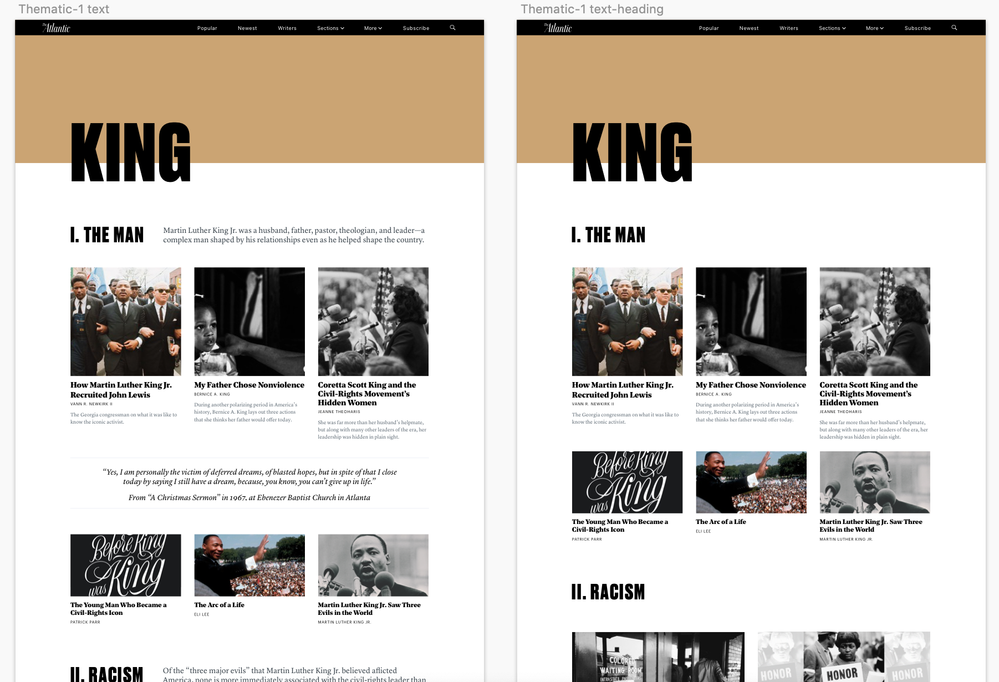

|
The Atlantic - Collections A new way to create and exhibit series of stories 
In collaboration with Caitlyn Hampton, I designed Collections, a story building tool. The Problem Current collections of stories (channel pages, categories, special projects) are stale, inflexible, and do little more than list out articles. Additionally, the distinctions and differences between each are not obvious or useful to readers. Research
Goals
From this research phase, we set out to build an internal tool for Atlantic folks to externally output collections of stories, all created with editorial storytelling and reader delight in mind. Wireframes Scenario-driven templates with interchangable zones to provide the right mixture of structure and flexibility: Paper prototyping with editorial staff to see how they would use this tool:


Examples of different zone variations and page layout mockups:  User Testing Designs |
is a product designer with experience in UX/UI, front-end, and graphic design. Her passions lie in emerging tech + design for social impact and delight.
Currently a product design fellow at The Atlantic.
Read more..